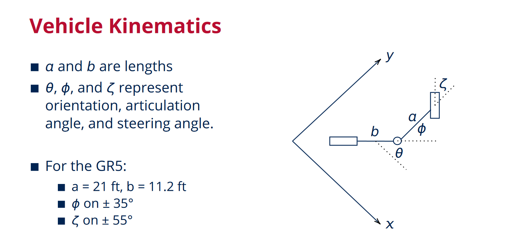
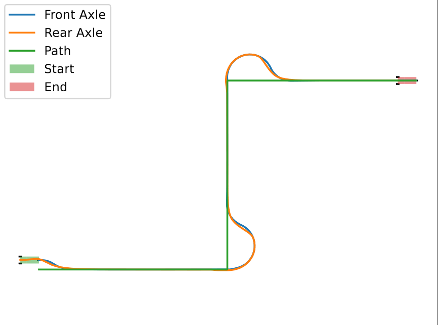
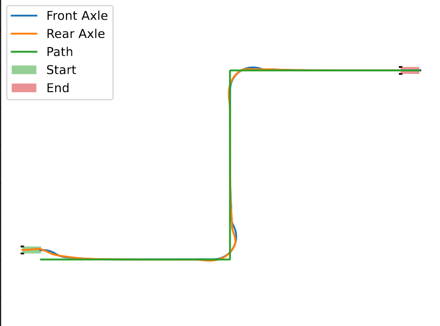
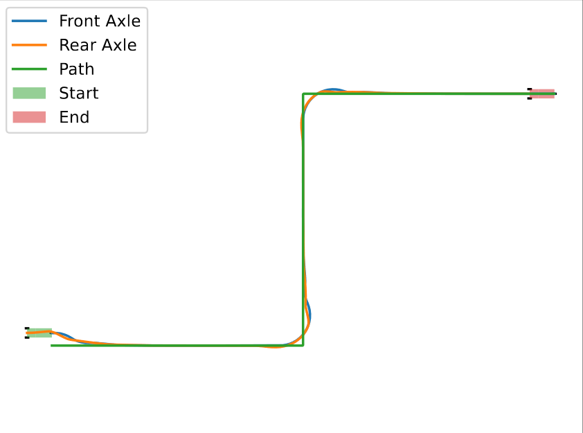
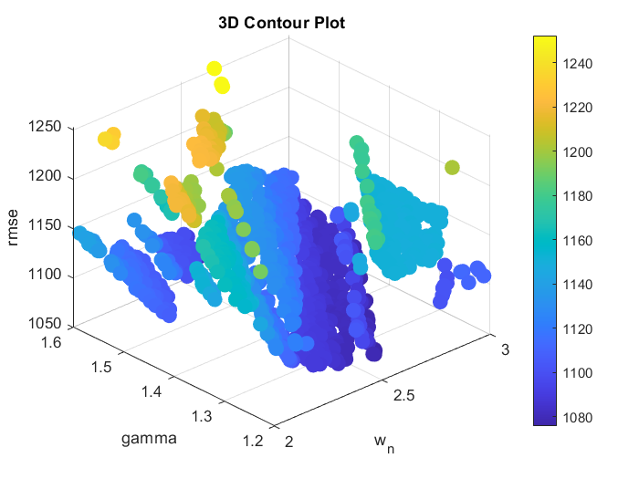

Dr. Marshall and I at MacLean's Collingwood office.
Project Overview
Motor graders play in a crucial role in the efficient operation of any mining operation, especially in underground applications. The moldboard (blade) passes over the ground to smooth uneven terrain so other vehicles can operate under nominal conditions.
However, to position the blade in all orientations required on site, motor graders have highly redundant kinematics for moldboard control, as well as driving. As a result, graders are the last stalwart to full mine automation. Multiple times a day, autonomous mining zones must be shut down so a human operator can grade the path. But with 4 driving inputs (speed, articulation angle, steering angle, wheel pitch), and 5 moldboard inputs, manual grading is often inefficient.
For this project, under the supervision of Dr. Joshua Marshall @ Offroad Robotics, I derived two path following control schemes for motor graders. I derived the vehicle kinematics and feedback linearization (FBL) for each, and applied FBL+PD, FBL+MPC, and NMPC path following control, simulated with Python. See the Abstract in Inquiry@Queen's Undergraduate Research Conference Proceedings (https://doi.org/10.24908/iqurcp18056)
Results & Analysis
Vehicle Kinematics
I derived non-holonomic vehicle kinematics for motor graders, notice that there are two steering inputs: front wheel steering angle, and articulation angle. This overactuation poses unique design challenges to determine optimality of control.

Kinematic model of the GR5.
Feedback Linearization Scheme
Ultimately two control schemes were developed, Rear Offset and Single Track Control, and path following feedback linearized error dynamics were derived.
Path Following Controller Implementation
I'll highlight Single Track Control, which uses the steering redundancy to mimic the driving behaviour of articulated vehicles. Three controllers were implemented for path following control: FBL+PD, FBL+MPC Optimization 1, FBL+MPC Optimization 2

Single Track Path Following Control of Motor Graders
FBL+PD control, rmse=1280

Path Following Control of Motor Graders
FBL+MPC control, optimization 1 rmse=294

Path Following Control of Motor Graders
FBL+MPC control, optimization 2 rmse=289
Numerical Tuning of Control System
As the relationship between the tuned feedback linearized error system and the performance of the non-linear kinematic model has not been analytically studied for non-holonomic systems, a numerical approach was taken to randomly sample the control parameter space (damping ratio and natural frequency for PD, p, Q, R for MPC).

Optimization space for the PD controller, obtained via latin hypercube sampling
Both control schemes were effective, above is a demonstration of the FBL+MPC implementation. This work was presented to MacLean Engineering's Advanced Vehicles team, and concepts are likely to be included in future grader autonomy efforts.
Future Improvements
There are two open areas for the path following control. First, the fidelity of the model can be increased to incorporate dynamics, ground-tire interaction, etc. Second, ongoing work to analytically determine the effect of tuning FBL systems applied to nonlinear control.
Takeaways
This project opened my eyes to what it means to be a researcher. It has driven me down the course of controls and state estimation as a future research direction, and most importantly, has shown me my capacity to learn. I owe a debt of gratitude to Dr. Marshall, Offroad Robotics, and the Ingenuity Labs Research Institute for the opportunity and the environment to grow as much as I did over the summer term.